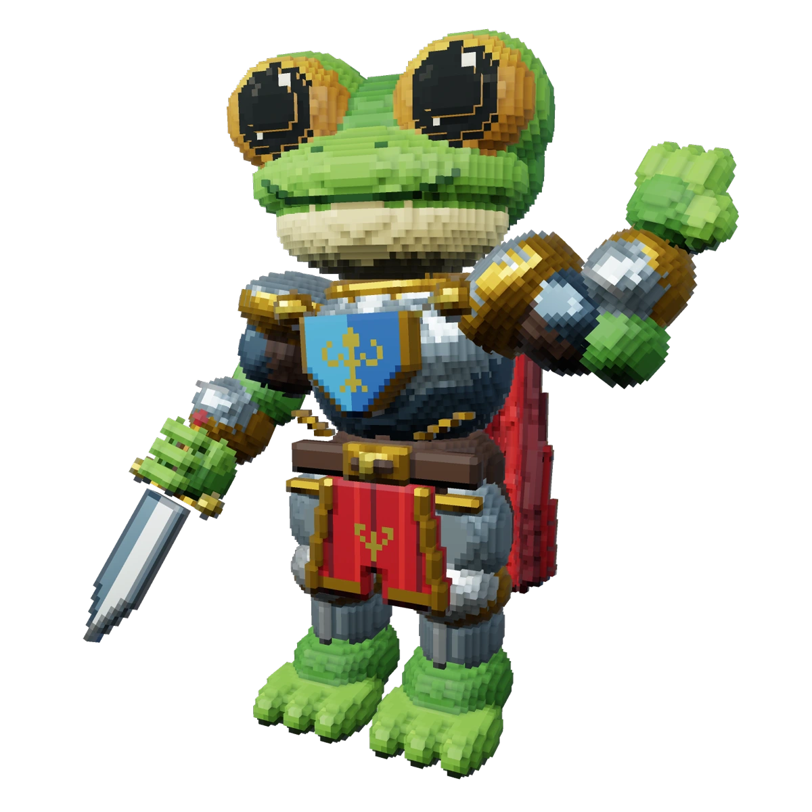
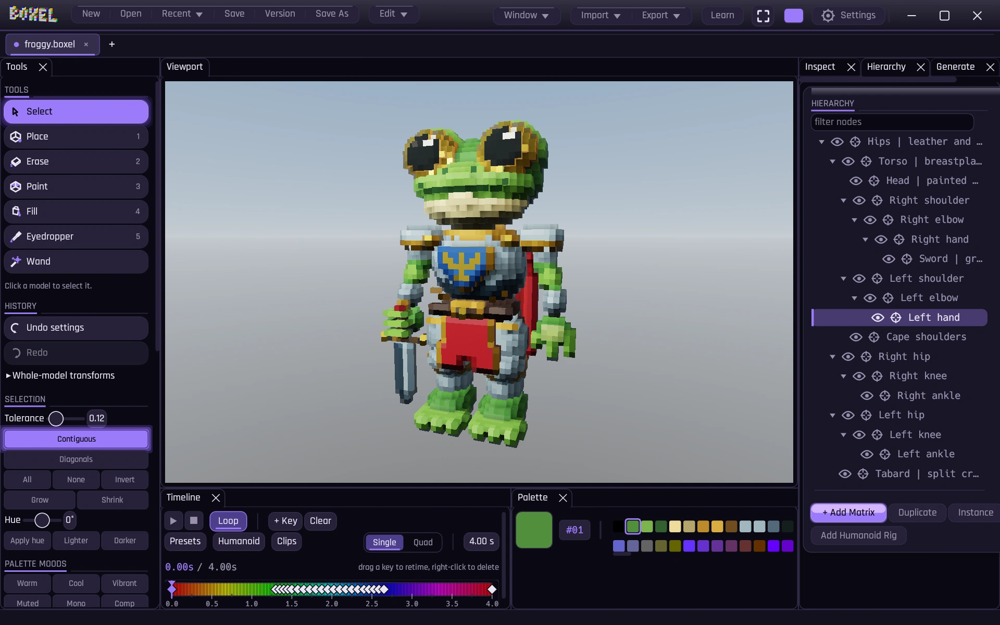
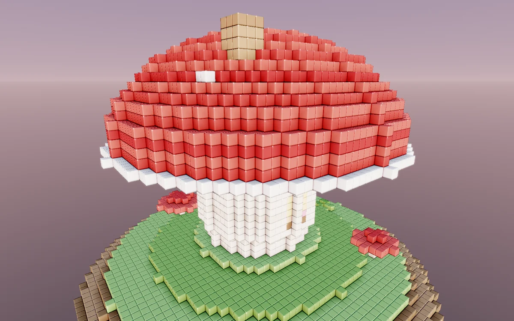
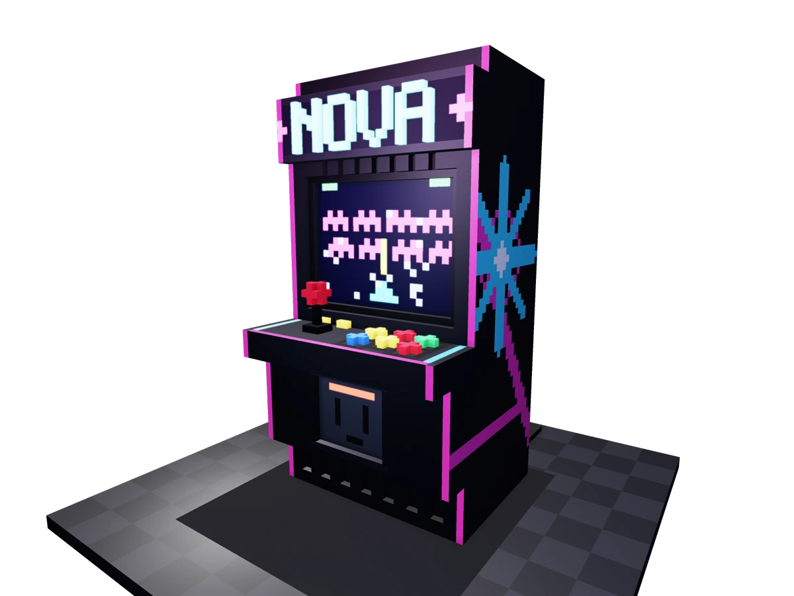
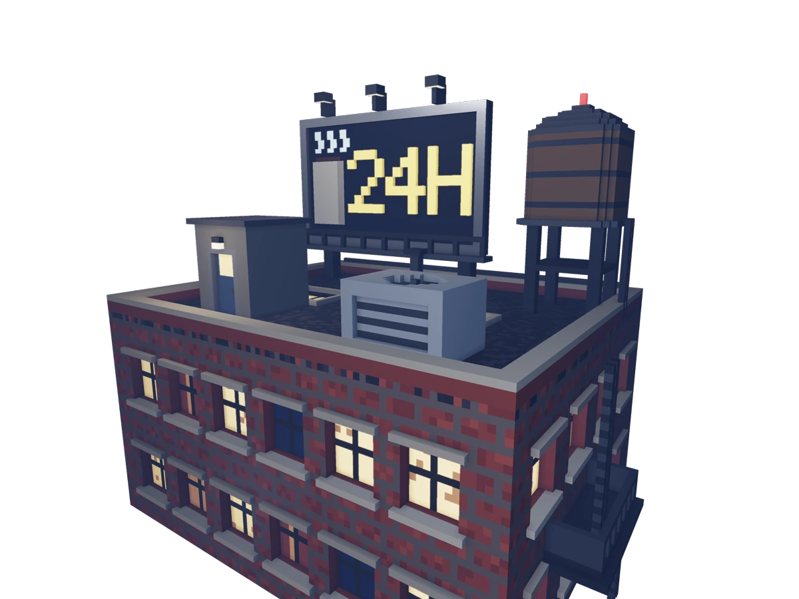
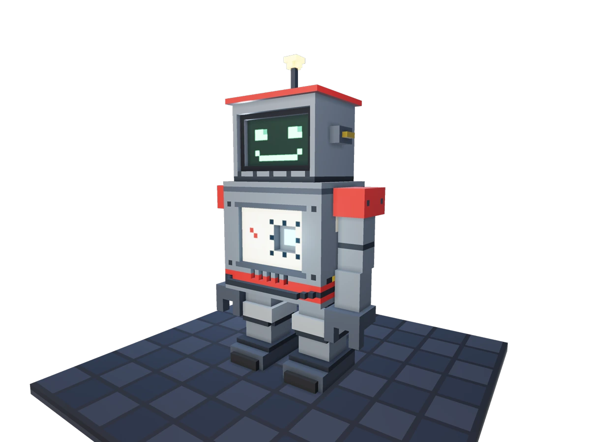

The desktop boxel editor.
It roxels.
Make characters. Paint every face.
Pose, animate, export.

The editor
Build. Paint.
Bring it to life.
Per-face materials. Editable shapes. Joint pivots and keyframes. One desktop workspace, from the first boxel to the final pose.

MakeSculpt, extrude, mirror, generate.
PaintColor and material on each face.
MoveSet pivots. Pose. Add keyframes.
Take it with youExport to your game or next tool.
This is what makes it a boxel
One cube.
Paint every face.
Paint an eye on the front. Put metal on the sides. Leave the back green. Each face can have its own color and material, all on the same boxel.
Metal, glass, and emissive surfaces can live side by side.
See what that looks likeGo on. Paint a face.
Front face selected. Pick a color.
Made in Boxel
Characters. Props.
Places to explore.
Built, painted, and rendered in Boxel. Open a piece to take a closer look.

Mushroom cottage
A little place to call home.

One more game
Right down to the buttons.

Still awake
A whole story on one rooftop.

Tin pal
A friendly face for your next game.
Learn by making
Your first boxel
has company.
Meet Patch. A little practice bot with a few things to fix. Open Learn in the editor and make them right.
- Watch a move. See the tool at work in your actual workspace.
- Try it yourself. Place, paint, select, and undo. The lesson checks your work.
- Keep exploring. Your own project returns when the lesson ends.
Eleven guided projects, from placing a boxel to exporting a model.

Still on the workbench
Come see what’s next.
Boxel is in development. Public downloads are coming.
Follow the builds, new art, and release news with Trent.